Все инструкции и рекомендации, описанные в этом руководстве, были подготовлены в результате подробных исследований для лучшего и более безопасного срока службы продукта. Неправильное использование и неполное / ненадлежащее обслуживание могут привести к внезапному критическому повреждению или сокращению срока службы изделия.
Все продукты должны использоваться в соответствии с условиями, установленными TIRSAN KARDAN. Для лучшего выбора продукта всегда убедитесь, что «Техническая анкета», предоставленная TIRSAN KARDAN, полностью заполнена.
Рабочие данные продуктов, такие как максимальный крутящий момент, скорость вращения, угол соединения, длина скольжения и т. Д., Никогда не должны превышаться. Если продукты каким-либо образом изменены, это может привести к повреждению продукта или автомобиля.
Все изменения в состоянии продукта или услуги без письменного согласия TIRSAN KARDAN лишают продукт гарантии. Продукция поставляется в виде готовых к установке блоков. Карданные валы сбалансированы, окрашены и смазаны для работы в соответствии с техническими паспортами, согласованными с изготовителем транспортного средства.
Все работы по сборке, разборке и техническому обслуживанию изделий должны выполняться только уполномоченным обслуживающим персоналом.
1.1. Транспортировка и Хранение
Во избежание перемещения скользящего блока карданные валы следует транспортировать и хранить в горизонтальном положении.
Используйте надлежащие блоки, чтобы предотвратить вращение карданного вала в горизонтальном положении.
Карданные валы не должны держаться за движущиеся части фланцев, такие как хомуты или универсальные шарниры. Они могут наклониться и привести к травмам.
Не следует применять какие-либо осевые усилия на шлицевые детали при транспортировке. Осевые нагрузки на узлы скольжения могут вызвать отделение и привести к травмам.
Карданные валы, состоящие из двух или нескольких частей, не должны подниматься, поддерживая только два конца. Поддержка только двух концов карданных валов во время транспортировки и хранения приводит к чрезмерному изгибу нагрузок на соединения и может привести к постоянной деформации.
Для лучшей транспортировки, см. Рисунок (рисунок 1.1) ниже. Для транспортировки используйте только прочные нейлоновые канаты или подъемные ремни. При использовании стальных шнуров защищайте острые края.
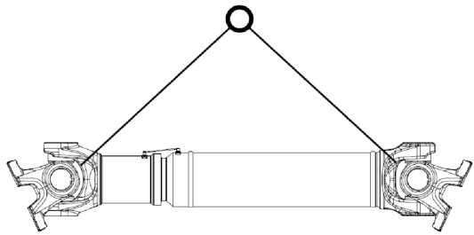Рисунок 1.1
Избегайте внезапных ударов, ударов, ударов и чрезмерной вибрации при транспортировке и хранении. Не храните и не держите вал в местах защитного покрытия, уплотнения или рилсанового покрытия (Рисунок 1.2).
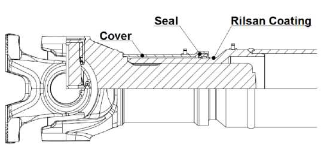Рисунок 1.2
Карданные валы должны переноситься или храниться только в рамах или стойках, одобренных TiRSAN.
KARDAN. Они должны поддерживаться, как показано на рисунке 1.3. Все опоры могут использоваться только вблизи области сварного шва. Не следует применять какие-либо усилия или вешать какое-либо оборудование, вес и т. Д. На детали для компенсации длины и на середину карданных трубок.
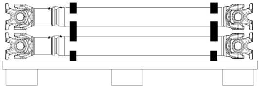Рисунок 1.3
Защитная полоса на блоке компенсации длины предотвращает отделение шлицевых частей и не должна сниматься до сборки.
При не горизонтальном хранении необходимо принять дополнительные меры предосторожности, чтобы предотвратить падение карданных валов.
Все продукты должны храниться в сухих местах, не допускать высоких и низких температур и повышенной влажности. (Рекомендуемый диапазон температур: 0-50 ° C)
Для обеспечения безопасности транспортных средств компоненты тормозных, электрических, гидравлических и топливопроводов должны быть расположены в таком положении, чтобы на них не влияли поврежденные или поврежденные карданные валы. Конструкции карданных валов пригодны для эксплуатации при температуре окружающей среды от -40 ° C до + 80 ° C (в течение коротких периодов и только изредка, до + 120 ° C). Однако для разных температур окружающей среды может потребоваться разное использование смазки. Для использования при превышении температуры требуется письменное разрешение TIRSAN KARDAN.
Карданные валы должны быть расположены далеко от источников тепла тела, таких как выхлопные трубы,
глушитель выхлопа и замедлитель. Для более близких применений он должен быть защищен от чрезмерного нагрева, используя надлежащий тепловой экран между карданным валом и источником тепла.
В случае применения длинных карданных валов на автомобиле рекомендуется использовать защитную раму вокруг карданного вала, чтобы предотвратить повреждение соседних деталей или автомобиля, вызванное поврежденными / сломанными карданными валами.
Поверхности соединительных фланцев карданных валов должны быть очищены от пыли, жира и краски, чтобы гарантировать безопасное соединение. Антикоррозийные средства, наносимые TIRSAN KARDAN на области соединения, удалять не нужно. Если на соединительных деталях имеются другие защитные крышки или конверты, их необходимо снять перед сборкой.
Перед сборкой карданного вала необходимо снять защитную ленту с блока компенсации длины. Карданные валы уравновешены сварными пластинами для соединения защитных полос. Только полоса должна быть удалена.
Во время сборки необходимо уделить особое внимание выравниванию стрелок счетчика и соединительных пластин защитной полосы (рис. 1.4) на шлицевом участке. Блок компенсации длины изготовлен так, чтобы иметь наилучшие характеристики при таком выравнивании. Части единиц компенсации длины не должны изменяться или использоваться в другом положении, а не по умолчанию.
При сборке двух или нескольких частей карданного вала фланцы трансмиссии и дифференциала должны иметь правильную ориентацию. Ориентация деталей узла компенсации длины никогда не должна изменяться.
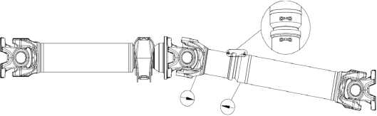Рисунок 1.4
Карданные валы с блоком компенсации длины должны быть оснащены шлицем, максимально защищенным от грязи и воды. Эта защита увеличивает общий срок службы и производительность карданного вала. Как правило, он должен быть установлен, как показано на рисунке, с шлицевым уплотнением, направленным вниз, чтобы любая грязь и вода стекали с уплотнения без накопления. Соединительные детали карданных валов изготавливаются в соответствии со стандартами DIN или SAE. Всегда проверяйте, чтобы контрфланцы на автомобиле имели одинаковый стандарт и соответствовали требуемым допускам для лучшей и более безопасной сборки.
Карданные валы никогда не должны поворачиваться с помощью упора, удерживаемого на универсальном шарнире и хомуте. Это может повредить смазочные ниппели и защитное уплотнение.
Область покрытия Rilsan (рис. 1.5) на устройстве компенсации длины должна быть защищена от высокой температуры, любых растворителей / агрессивных химикатов и механических повреждений.
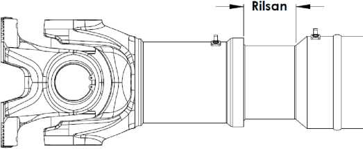Рисунок 1.5
Карданные валы никогда не должны очищаться с использованием агрессивных химикатов или струй воды под давлением.
Защитные уплотнения могут быть повреждены, и в результате этого пыль, грязь, вода или любые другие посторонние материалы могут проникнуть во внутренние области.
Передние валы поставляются в комплекте с центральным подшипниковым узлом, готовым к установке. На переднем центральном вале подшипника и фланец, а на два или несколько валов штучных центра подшипника и мидель ярмо затянуто и зафиксировано в отношении к собственным значениям крутящего момента, сведенным в таблице 1.1. Не требуется выполнять дальнейшие операции с этой частью во время установки.
После разборки с целью обслуживания всегда проверяйте, чтобы она была затянута надлежащим оборудованием, с надлежащим моментом и надежно зафиксирована.
Таблица 1.1
|
Подшипник подвесной |
Крутящий момент (Nm) |
|
CB.06036.xx.02 |
600 ±50 |
|
CB.06536.xx.02 |
700 ±50 |
|
CB.06523.xx.02 |
130 ±5 |
|
CB.06022.xx.02 |
230 ±10 |
|
CB.03514.xx.02 |
55 ±2,5 |
|
CB.03517.xx.02 |
55 ±2,5 |
|
CB.03013.xx.02 |
48 ±7 |
|
CB.03015.xx.02 |
66 ±6 |
Рисунок 1.6
На центральной замены подшипника на типах Упакован с помощью стопорной гайки (рис 1.6), гайку необходимо заменять новым. новый
Стопорная гайка должна быть затянута с надлежащим моментом и зафиксирована, опираясь на противоположные края.
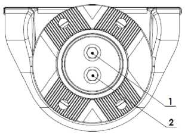Рисунок 1.7
На промежуточных узлах, упакованных с помощью двух болтов (Рисунок 1.7), после затяжки 1-го и 2-го болтов с соответствующими моментами затяжки 1-й жирный шрифт необходимо подтянуть, чтобы предотвратить любое ослабление. (Порядок затяжки 1 - 2 - 1)
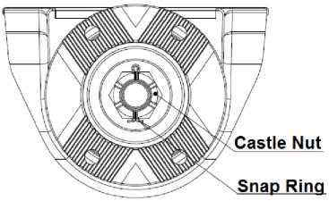Рисунок 1.8
На миделе сборок упакованных с помощью корончатой гайки и стопорного кольца (рис 1.8), замок гайка должна быть затянута вблизи нижнего допуска крутящего момента и продолжать применять крутящий момент до замка гайки имеет надлежащую ориентацию позволяет стопорное кольцо установке. После установки стопорного кольца, концы должны быть тщательно согнуты, чтобы зафиксировать узел.
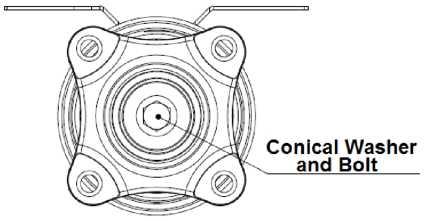Рисунок 1.9
На промежуточных узлах без фиксации (рисунок 1.9) механизм должен быть упакован с использованием конической шайбы и соответствующего болта. Перед установкой болта на резьбу необходимо нанести специальный химикат (LOCTITE), чтобы предотвратить ослабление болта. Всегда проверяйте, чтобы болт затягивался с надлежащим моментом после нанесения химического вещества.
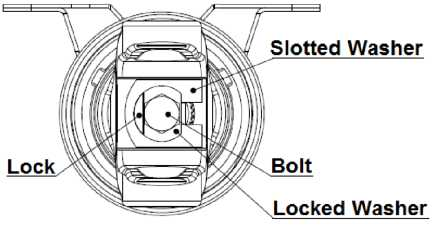Рисунок 1.10
На миделе сборок упакованных с помощью болта и запертой шайбы (рис 1.10), болт должен быть затянут вблизи нижнего допуска крутящего момента и продолжать применять крутящий момент до болта имеет надлежащую ориентацию позволяет стопорную шайбу изгибу должным образом, чтобы предотвратить ослабление болта. При правильной ориентации шайба должна быть осторожно согнута, чтобы зафиксировать узел.
При сборке с прорезной шайбой всегда проверяйте, чтобы шлицевая шайба была расположена таким образом, чтобы ее поверхность с точечным ниппелем находилась снизу (внутри шлицевого отверстия).
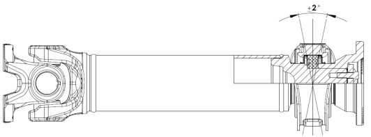Рисунок 1.11
На карданных валах, установленных с центральным подшипником, рекомендуется, чтобы центральный подшипник был вертикальным во всех направлениях относительно горизонтальной оси промежуточного узла (Рисунок 1.11).
Максимально допустимый угол между центральной несущей подушкой подшипника и осью узла миделя составляет 90 ° ± 2 °. (только для CB.06523.xx.02 центральный подшипниковый узел максимально допустимый угол составляет 90 ° ± 3 °)
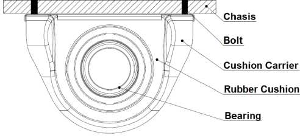Рисунок 1.12
Всегда проверяйте, чтобы центральный подшипниковый узел крепко был прикручен к раме автомобиля с помощью соответствующих болтов и шайб (Рисунок 1.12). Чтобы гарантировать безопасную установку, используйте только болты и шайбу, предписанные TIRSAN KARDAN или изготовителями транспортных средств.
Центральный подшипниковый узел необходимо прикрутить к раме после того, как два конца карданного вала к соответствующим фланцам прикручены болтами. Соединительные фланцы крепятся болтами только с помощью утвержденных болтов и затягиваются с моментом затяжки, предписанным TIRSAN KARDAN или производителем автомобиля. Болты затянуты в поперечном порядке, чтобы гарантировать более безопасный монтаж.
Для болтового соединения болта с фланцем и фланца дифференциала рекомендуется установить болты на фланце фланца и дифференциала. Чтобы предотвратить любую деформацию универсального шарнира, никогда не сгибайте шарнир до его механических пределов во время сборки или разборки. Падение карданного вала во время разборки должно быть предотвращено, а соединительные болты должны быть полностью сняты после того, как он будет закреплен.
Перед снятием фланцевых болтов отметьте положение фланца и болтов.
2. Инструкция по обслуживанию
Для повышения производительности карданных валов при увеличенном сроке службы работы по техническому обслуживанию должны выполняться через регулярные промежутки времени.
Объем и интервалы работ по техническому обслуживанию карданных валов изменяются в зависимости от типа, рабочей нагрузки и условий окружающей среды. Все интервалы технического обслуживания должны быть записаны в руководстве по техническому обслуживанию транспортного средства, и владелец транспортного средства должен быть информирован.
Рекомендуется согласовывать интервалы осмотра и технического обслуживания с другими частями или сервисными интервалами автомобиля в соответствии с таблицей ниже. TIRSAN KARDAN рекомендует проводить инспекционное техническое обслуживание карданных валов в двух группах, а именно: Малая и Главная инспекция.
Таблица 2.1
|
Интервалы осмотра |
|||
|
Малая инспекция |
Главная инспекция |
||
|
Коммерческий транспорт |
Большие расстояния (транспортные средства, ежегодно проезжающие 80 000 км или более) |
50.000 км 1 год |
200.000 км 3 года |
|
Региональный (транспортные средства, ежегодно от 20 000 до 80 000 км) |
25.000 км 1 год |
150.000 км 3 года |
|
|
Внедорожник / Строительство (транспортные средства, ежегодно проезжающие 20 000 км или менее) |
20.000 км 3 мес. |
50.000 км 1 год |
|
|
автобусы |
Большое расстояние (транспортные средства, ежегодно проезжающие 100 000 км или более) |
50.000 км 1 год |
150.000 км 2 года |
|
Региональный (Транспортные средства, ежегодно проезжающие 100 000 км или менее) |
25.000 км 6 мес. |
100.000 км 2 года |
|
* Что произойдет раньше.
TIRSAN KARDAN рекомендует провести серьезную проверку после смены владельца транспортного средства или в случае аварии.
Все операции по техническому обслуживанию и ремонту карданного вала должны быть указаны в «Документации по техническому обслуживанию карданного вала» в приложении.
2.1. Быстрая проверка
Быстрая проверка - это регулярная проверка карданного вала, согласованная с другим периодическим обслуживанием. Он охватывает общий осмотр и техническое обслуживание карданных валов, установленных в транспортном средстве или в промышленном оборудовании без демонтажа.
Перед любыми проверками или операциями на карданных валах всегда проверяйте, что двигатель остановлен и надежно закреплен, чтобы привод не мог быть активирован без разрешения.
1. Соединительные болты карданного вала и центрального подшипника должны контролироваться и при необходимости подтягиваться с надлежащим моментом.
Если болты крепления центрального подшипника ослаблены, их необходимо выровнять перед повторным затягиванием. Если шайба имеет какую-либо деформацию, она должна быть заменена на новую.
2. Необходимо проверить состояние всех стопорных колец на универсальных шарнирах. На кольцевых кольцах не должно быть никаких деформаций или различий в ориентации. Для универсальных шарнирных соединений типа «штифт» убедитесь, что все зубы находятся в хорошем состоянии (без разрывов и разрывов).
3. Визуально проверьте все уплотнения вкладышей подшипников и блок компенсации длины. Для смазываемых универсальных шарниров убедитесь, что все смазочные ниппели находятся в хорошем состоянии и имеют защитные резиновые колпачки. Загрязненные смазочные ниппели необходимо очистить перед повторной смазкой.
4. Нижняя часть вкладышей подшипников должна быть проверена на предмет изменения цвета из-за чрезмерного нагрева.
5. Все соединения должны быть проверены вручную на наличие видимого или ощутимого люфта, показанного на рисунке 2.1. Он должен быть нанесен на каждое соединение во всех направлениях, чтобы обнаружить люфт. Зазоры могут привести к неправильному балансу, вибрации и шуму.
6. Проверьте, нет ли уравновешивающих грузов и соединительных пластин на блоке компенсации длины.
7. Визуально проверьте уплотнения подшипников универсального шарнира и устройства компенсации длины. Дефектные уплотнения могут привести к чрезмерной потере смазки и поломке карданного вала.
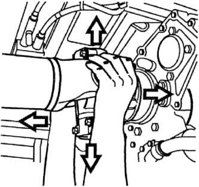Рисунок 2.1
8. Сопутствующий фланец в промежуточной сборке необходимо проверить на наличие люфта, приложив усилие рукой.
9.Проверьте состояние покрытия Rilsan на рукаве компенсации длины. Покрытие Rilsan должно быть чистым и не иметь видимых повреждений (без отслаивания и истирания).
10. Блок компенсации длины должен быть проверен вручную на наличие видимого или ощутимого люфта. Он должен быть нанесен на каждое соединение во всех направлениях, чтобы обнаружить люфт.
11. Трубки карданного вала должны быть визуально проверены на наличие каких-либо мест трения, точки удара, разрушения и ушиба.
12. Детали универсального шарнира должны быть визуально проверены на наличие повреждений. Между хомутом не должно быть каких-либо контактных знаков, указывающих на чрезмерные углы соединения.
При обнаружении какого-либо ненормального состояния при незначительном осмотре карданный вал необходимо разобрать для серьезного осмотра.
2.2. Главная инспекция
Капитальный осмотр охватывает подробные процедуры осмотра и технического обслуживания карданного вала. Перед каждой серьезной проверкой должна быть проведена незначительная проверка. После незначительной проверки карданный вал должен быть снят с автомобиля или промышленного оборудования для дальнейших проверок.
1. Хомуты фланцев и шарнирный подшипник необходимо проверить на наличие ощутимого люфта или сопротивления, поворачивая их рукой в вертикальном и горизонтальном направлениях.
2. Состояние уплотнений подшипников и смазочных ниппелей на универсальных шарнирах смазываемого типа необходимо проверять визуально и вручную. В случае обнаружения каких-либо деформаций, следов отрывов, визуальных трещин или разрывов на уплотнениях и других резиновых деталях, универсальный шарнир должен быть заменен авторизованной ремонтной мастерской.
3.Для карданных валов смазываемого типа следует смазывать соединения, используя утвержденные смазки TIRSAN KARDAN, до тех пор, пока смазка не выйдет из уплотнений подшипников. Если смазка не выходит из одного или нескольких уплотнений или смазка выходит из других материалов, таких как вода, пыль или ржавчина, карданный вал необходимо отправить в авторизованную ремонтную мастерскую для замены шва.
4. Блок компенсации длины должен быть полностью отделен для детального осмотра внутренних поверхностей, рилсанового покрытия и деформации на шлицевых и охватывающих деталях.
5. Печать на устройстве компенсации длины должна проверяться как визуально, так и вручную. При обнаружении каких-либо деформаций, следов отрывов, визуальных трещин или разрывов на уплотнении или защитном кольце уплотнение должно быть заменено уполномоченной ремонтной мастерской.
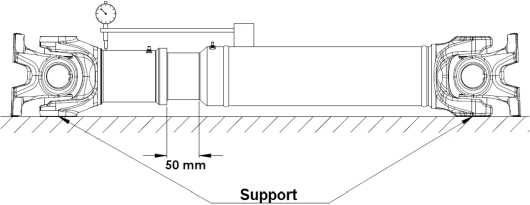Рисунок 2.2
6.Для проверки люфта компонентов блока компенсации длины карданный вал должен быть расположен горизонтально и вытянут примерно на 50 мм, как показано на рисунке.
2.2. Измеритель уровня должен быть закреплен с помощью держателя индикатора на трубе вала рядом со сварочным швом. Циферблат расположен возле сварного шва защитного чехла. Максимально допустимый осевой зазор между положением лежа и поднятым в середине карданного вала (центр тяжести) составляет 0,20 мм.
Примечание: Для измерения карданных валов, имеющих 110 или менее единиц компенсации длины, единица компенсации длины должна быть увеличена до половины общей длины.
7. Если блок компенсации длины имеет какие-либо повреждения или неправильный зазор, карданный вал необходимо отремонтировать в авторизованной ремонтной мастерской. Тирсан Кардан должен смазывать правильную единицу компенсации длины с использованием рекомендованных смазок и собирать ее в соответствии с маркировочными стрелками.
8. Карданные валы с центральными подшипниками; Держатель подушки, резиновая прокладка и подшипник должны проверяться как визуально, так и вручную. Не должно быть никаких деформаций, разрывов или трещин на держателе подушки рядом с разъемами транспортного средства, корпусом держателя и резиновой подушкой.
9. Центральный подшипниковый узел необходимо проверить, повернув его вокруг карданного вала. Подшипник должен вращаться плавно и тихо. Если обнаружен какой-либо дефект в центральном подшипнике, следует заменить центральный подшипник в авторизованной ремонтной мастерской.
10. При замене центрирующих подшипниковых узлов в сборе также следует заменить новые.
11. Передняя сборка должна быть проверена на предмет ослабленного соединения.
12. Болт или гайка на промежуточном узле должны быть затянуты в соответствии с таблицей моментов вращения центрального подшипника и зафиксированы.
После всех ремонтных работ или замены детали на карданном валу его необходимо перебалансировать.
Если приводной вал поврежден, изогнут или явно перекручен из-за перегрузки, его больше нельзя использовать или ремонтировать. Следует заменить на новый.
3. Смазка
Карданные валы, произведенные TIRSAN KARDAN, подразделяются на две группы как регенерируемые и не требующие технического обслуживания. Необслуживаемые продукты разработаны и производятся, так как не требуют периодической повторной смазки.
Крест универсального шарнирного карданного вала многоразового использования, показанный на рис. 3.1, оснащенный смазочными ниппелями, которые имеют соединение в соответствии с TS 10687 (DIN 71412). Процесс смазки должен выполняться с использованием соответствующего оборудования.
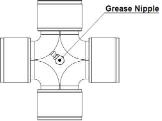Рисунок 3.1
Однако компенсация длины стандартных конструкций не требует технического обслуживания, некоторые конструкции могут иметь смазочный ниппель для повторного смазывания шлицевого профиля.
Карданные валы, снабженные смазочными ниппелями, требуют регулярного регулярного смазывания смазками, предписанными в этом руководстве, чтобы продлить срок их службы.
Блок компенсации длины со смазочным ниппелем необходимо смазывать после полного сжатия шлицевого профиля.
Перед началом смазки убедитесь, что на всех смазочных ниппелях нет пыли. Грязные соски должны быть очищены. Смазка не может вдавливаться при чрезмерном давлении или при сильном воздействии смазки. (Давление смазки <15 бар)
После операции смазки следует установить резиновые защитные колпачки смазочных ниппелей. Отсутствует или
поврежденные резиновые заглушки следует заменить новыми.
На центральных подшипниковых узлах без смазочных ниппелей центральный подшипник защищен специальными крышками и заполнен смазкой. Не требует дальнейшего смазывания. Те, у кого есть смазочные ниппели, должны быть повторно смазаны в тот же период, что и единица компенсации длины.
Карданные валы, которые хранились более шести месяцев, перед использованием необходимо повторно смазать. Никакие другие материалы, такие как воздух, вода или любые другие растворители, не должны продавливаться через смазочные ниппели.
3.1. Рекомендации по смазке
Карданные валы следует смазывать утвержденными смазками, указанными в таблице 3.1 в соответствии с тремя различными климатическими условиями.
Таблица 3.1
|
Особенности |
Климатические условия |
||
|
Арктика |
холодный климат |
нормальный климат |
|
|
Диапазон температур |
-60°C/+100°C |
-45°C/+130°C |
-20°C/+150°C |
|
Тип мыла |
Литиевый комплекс |
Литиевый комплекс |
Литиевый комплекс |
|
Класс NLGI |
1-2 |
2 |
2 |
|
Отработанное проникновение |
280 / 310 (Pw 60 / DIN ISO 2137) |
max.40 (Pw 60 / DIN ISO 2137) |
265-295 (25°C ASTM-D217) |
|
Точка падения |
>180 °C (IP 396) |
> 180 °C (IP 396) |
min. 250 °C (ASTM-D 2265) |
|
Утвержденные смазки |
FUCHS RENOLIT S 2 |
FUCHS GLEITMO 585 K |
SHELL GADUS S3 V220C2 |
Для других утвержденных смазок TIRSAN KARDAN проверьте стандарт TM-116 TIRSAN KARDAN. Смазки с другим типом мыла никогда не должны смешиваться при повторном смазывании.
Смазку следует выполнять только с использованием мыльных смазок NLGI класса 2 и Lithium-Complex. Смазки с MoS2 нельзя использовать.
3.2. Интервалы смазки
Если иное не предписано TIRSAN KARDAN, карданные валы следует смазывать с интервалами, указанными в таблице 3.2 или ближайшем графике периодического технического обслуживания автомобиля, используя только смазку, одобренную TIRSAN KARDAN.
Таблица 3.2
|
Use of Vehicle |
Интервалы смазки |
||
|
Крестовина |
Сплайн-профиль |
||
|
Коммерческий транспорт |
На большие расстояния (транспортные средства, ежегодно проезжающие 80 000 км или более) |
25.000 км 6 мес. |
200.000 км 3 года |
|
Региональный (Транспортные средства, ежегодно проезжающие от 20 000 до 80 000 км) |
12.500 км 6 мес. |
150.000 км 2 года |
|
|
Бездорожье / Строительство (транспортные средства, ежегодно проезжающие 20 000 км или менее) |
7.500 км 3 мес. |
20.000 км 1 год |
|
|
Автобусы |
На большие расстояния (транспортные средства, ежегодно проезжающие 100 000 км или более) |
50.000 км 6 мес. |
150.000 км 2 года |
|
Региональный (Транспортные средства, ежегодно проезжающие 100 000 км или менее) |
25.000 км 3 мес. |
100.000 км 1 год |
|
* Что произойдет раньше.
(Действительно только для смазываемых (с смазочными ниппелями) карданных валов)
Карданные валы, работающие при повышенных температурах, рекомендуется смазывать через более короткие промежутки времени для повышения производительности и увеличения срока службы.
4. Ремонт
Карданные валы, произведенные TIRSAN KARDAN, могут ремонтироваться только уполномоченным автосервисом или другими ремонтными мастерскими.
Все операции или ремонт, выполненные неуполномоченными лицами, делают изделие гарантийным. Ремонт должен выполняться только с использованием оригинальной запчасти.
Для сборки и разборки карданных валов на автомобиле должны применяться все инструкции, предписанные в данном руководстве.
До и после процедуры обслуживания карданные валы нельзя очищать струей воды или пара под высоким давлением. При чистке не используйте агрессивные чистящие средства и растворители. При нанесении краски на карданный вал на автомобиле убедитесь, что покрытая рилсаном деталь и все уплотнения защищены.
Все модификации автомобиля, такие как изменение колесной базы, установка замедлителя, замена или модификация дифференциала или коробки передач, перегрузка автомобиля и увеличение мощности двигателя, изменяет силы, действующие на карданный вал.
{% include kupite_catalog.html %}